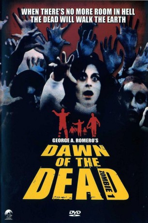

#7847 Zombie
Alternativ: Dawn of the Dead
 
 IMDB-Wertung: 8.0 / 10
IMDB-Wertung: 8.0 / 10  Metascore: 0
Metascore: 0 
In den USA herrscht nationaler Notstand. Eine bislang unbekannte Seuche läßt die Körper soeben Verstorbener wiederauferstehen. Die allesverschlingenden Bestien aus dem "Reich der Toten" fallen wahllos Menschen an, und ihre Opfer werden selbst zu "Zombies". Drei Männer und eine Frau fliehen vor der Invasion der Körperfresser und verschanzen sich in einem Supermarkt - ein verzweifelter Überlebenskampf beginnt.
Jahr: 1978
Dauer: 119 Minuten
FSK: BPjM Restricted
Land: USA Studio: UFDCTonspuren: DD2.0 - ,
Untertitel:
Auflösung: 1080p (1920x1032) Größe: 11366 MB
Genre: Action, Thriller, Horror, Abenteuer
Regisseur:  George A. Romero
George A. Romero
Drehbuch: George A. Romero
Soundtrack: Dario Argento, Goblin, Agostino Marangolo, Massimo Morante, Fabio Pignatelli, Claudio Simonetti
Darsteller:
- David Emge als Stephen
 Ken Foree als Peter
Ken Foree als Peter- Scott H. Reiniger als Roger
- Gaylen Ross als Francine
- Richard France als Scientist
- John Rice als Officer in Project Apt.
- Joseph Pilato als Officer at Police Dock
 Tom Savini als Motorcycle Raider
Tom Savini als Motorcycle Raider- Marty Schiff als Motorcycle Raider
- Taso N. Stavrakis als Motorcycle Raider
- Mike Christopher als Hare Krishna Zombie
- John Amplas als 2nd Guy on Roof (uncredited)
- Ben Barenholtz als Cowboy Hat Zombie Hit by Sledge (uncredited)
- Adolph Caesar als Narrator of Theatrical Trailer (uncredited)
- Roy Frumkes als 1st Pie-In-Face Zombie (uncredited)
- Debra Gordon als Dark Curly Haired Plaid Shirted Zombie in Bikers' Battle / Red Turtleneck Sweatered Zombie Grabbing at Peter's Legs (uncredited)
- Michael Gornick als News Reporter on Radio (uncredited)
- John Harrison als Screwdriver Zombie (uncredited)
- Jon Hayden als Featured zombie (uncredited)
- C. Courtney Joyner als Zombie Wearing Eyeglasses (uncredited)
- Jeff Paul als Biker Who Shoots Flyboy (uncredited)
- John Paul als Bald Zombie - Airport Chart House (uncredited)
- George A. Romero als TV Director / Nick - Biker in Santa Claus Suit (uncredited)
- Milt Thompson als Checkered Shirted Zombie Who Attacks Stephen in Elevator (uncredited)
- David Crawford als Dr. Foster
- David Early als Mr. Berman
- Howard Smith als TV Commentator
- Daniel Dietrich als Givens
- Fred Baker als Commander
- James A. Baffico als Wooley
- Rod Stouffer als Young Officer on Roof
- Jese Del Gre als Old Priest
- Clayton McKinnon als Officer in Project Apt.
- Ted Bank als Officer at Police Dock
- Randy Kovitz als Officer at Police Dock
- Patrick McCloskey als Officer at Police Dock
- Pasquale Buba als Motorcycle Raider
- Tony Buba als Motorcycle Raider
- Butchie als Motorcycle Raider
- Dave Hawkins als Motorcycle Raider
- Tom Kapusta als Motorcycle Raider
- Rudy Ricci als Motorcycle Raider
- Joe Shelby als Motorcycle Raider
- Nick Tallo als Motorcycle Raider
- Larry Vaira als Motorcycle Raider
- Sharon Hill als Lead Zombie
- Pam Chatfield als Lead Zombie
- Clayton Hill als Lead Zombie
- Jay Stover als Lead Zombie
- Joe Abeln als Redneck Rifleman That Misses (uncredited)
Datei: X:\FSK18-Collections\Zombie\Zombie (1978, FSKBPjM Restricted, 1920x1032).mkv seit 25.12.2017
Festplatte: FSK18
 Alle Filme aus Gruppe 'FSK18-Collections\Zombie'
Alle Filme aus Gruppe 'FSK18-Collections\Zombie'